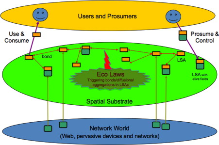

A brief introduction to my research activities
Danilo Pianini, 2026-01-22
Who am I?

(note: picture from 2014, I may look older now)
Danilo Pianini
- Associate Professor @ University of Bologna
- Department of Computer Science and Engineering (DISI), Cesena, Italy
Research:
- about 100 publications in peer-reviewed venues
- Head of the Pervasive Software Lab
Institutional roles:
- Department Delegate for Open Science
- FAIR Champion of UniBo
Teaching:
- Object-Oriented Programming (Bachelor)
- Software Design and Development (Bachelor)
- Software Process Engineering (Master)
- Micro-macro Computational Models: Theory, Applications, and Emergent Properties (Collegio Superiore)
Main research theme:
Self-organizing pervasive systems

Context:
- large-scale systems made of many heterogeneous devices
- devices interact locally
- central coordination impossible, undesirable, or available only intermittently
- global behavior emerges from local interactions
- classically, inspired by natural systems (e.g., social insects)
- the system must be:
- robust to failures (including unknown unknowns)
- adaptive to changing environments
- scalable to large numbers of devices
Main open questions:
- how do we test/verify such systems?
- how do we engineer emergence?
- how do we deal with openness and unpredictability?
Florida Institute of Technology - 2009 (master student)

-
First working period abroad
-
Agent-based approaches: design simple agents that interact locally to produce global behaviors
-
Ant-colony-inspired approach to move similar files closer together in a distributed storage system
-
Validated by run on multiple systems (nine PCs)
-
First publication: Self Organization in Coordination Systems Using a WordNet-Based Ontology, SASO 2010
-
where is “large scale”?
-
portability of the approach?
The Alchemist Simulator - 2011 (master thesis)

-
We need simulation to test in large scale
-
Agent-based, time-driven simulators scale to ~10² agents before becoming effectively unusable
-
Idea: pick a high-performance engine from stochastic chemistry, and extend the model to spatially distributed systems
- Risk: extensions destroy performance
- Result: not as fast as pure chemistry, but it can still simulate ~10³-10⁴ agents efficiently
-
First journal publication: Chemical-oriented simulation of computational systems with ALCHEMIST
-
how to reflect changes in the environment within the digital world?
-
how to simulate richer environments?
The SAPERE Project - 2012 (PhD student)


-
SAPERE: Self-aware Pervasive Service Ecosystems
- PI: Franco Zambonelli (Università di Modena e Reggio Emilia)
- EU FP7 project (2010-2013)
-
Idea:
- devices and network are reified as “live sematic annotations” (LSAs) in a shared space
- LSAs combine by means of “eco-laws” to produce emergent behaviors
-
Somewhat a predecessor of the “digital twin” concept
-
Minimal changes to the desired algorithms require a complete redesign of the eco-laws
- No modularity
- Limited reusability
The Alchemist Simulator pt. 2 - Johannes Kepler Universität, Linz, 2013 (PhD student)
-
First doctoral period abroad
-
Alchemist became capable of simulating the SAPERE model and more:
- Biological systems (e.g., A model for drosophila melanogaster development from a single cell to stripe pattern formation)
- Smart cities (e.g., HPC from a self-organisation perspective: The case of crowd steering at the urban scale)
- Execution on High-Performance Computing Clusters (e.g., Distributed statistical analysis of complex systems modeled through a chemical metaphor)
-
The simulator is ready for complex, large-scale experiments
-
The open question remains:
- How do we design self-organizing software top down, modularly?
Aggregate Computing - Raytheon BBN Tech., Cambridge, MA, USA, 2014 (PhD student)

- Amorphous computing (Programming an Amorphous Computational Medium) introduced the idea of programming millions of devices as a single computational unit, and programming them via global-to-local compilation.
- $\Rightarrow$ MIT Proto implemented this idea, but its semantics was complex and formalized only ex- post.
- $\Rightarrow$ The Field Calculus was a simplified formal model designed to capture the essence of such systems.
- $\Rightarrow$ From the Field Calculus, we designed Protelis, the first Higher-Order, practical aggregate programming language.
- $\Rightarrow$ From Protelis, we derived the Higher Order Field Calculus (HOFC).
- $\Rightarrow$ The HOFC became the theoretical foundation of Aggregate Computing.
Aggregate Computing in a nutshell

- Compute by means of computational fields:
- A computational field is a mapping from devices to values
- Computational fields can be combined, transformed, and manipulated as first-class values
- The perception is that of a single computational device operating on fields
- Each device runs the same program
- Each device can sense the surrounding values of fields
- Each device contributes its own value to the fields
- Round based execution model, each device repeatedly:
- gathers neighbor values and senses local context
- computes the program
- shares the result with neighbors
- (functional) Language-based approach:
- The programmer writes programs in a dedicated language (e.g., Protelis)
- Programs are compiled to local code for each device
- The distributed execution produces the desired global behavior
- Reuse and modularity are built-in!
- a library of proven self-stabilizing building blocks is available
- composition of building blocks is guaranteed to preserve self-stabilization
Research directions
Aggregate Computing opened many research directions:
- Swarm Robotics
- Communication in navigation systems
- Federated Learning
- “Pulverization” of deployed components
- Bio-inspired construction
- Multi-drone tracking
Other relevant activities
Technology transfer: Project Wood4.0 - Partner: SCM Group
- Automated, self-healing update system for large-scale wood processing manufacturing machines
- (patent pending)


Advanced Tooling

Collektive: Aggregate Programming in pure Kotlin

JaKtA: type-safe Belief-Desire-Intention agent-oriented programming

Emerge: affordable swarm robotics
People (alphabetical order by column)
 |
 |
 |
 |
 |
| Gianluca Aguzzi Post-Doc Researcher |
Martina Baiardi PhD Student |
Samuele Burattini Post-Doc Researcher |
Roberto Casadei Tenure-Track Researcher |
Giovanni Ciatto Tenure-Track Researcher |
 |
 |
 |
 |
 |
| Angela Cortecchia PhD Student |
Davide Domini Phd Student |
Nicolas Farabegoli Phd Student |
Andrea Omicini Full professor |
Danilo Pianini Associate Professor |
 |
 |
|||
| Alessandro Ricci Associate Professor |
Mirko Viroli Full professor |
Collaborations
- Joint research activity
- Let’s start small, and see if it grows!
- PhD students exchanges
- Master students internships / theses abroad?
 ACSOS 2026: shameless plug
ACSOS 2026: shameless plug
$\Rightarrow$ Cesena is hosting the 2026 edition of the IEEE International Conference on Autonomic and Self-Organizing Systems (ACSOS)
- A great chance to meet and discuss!